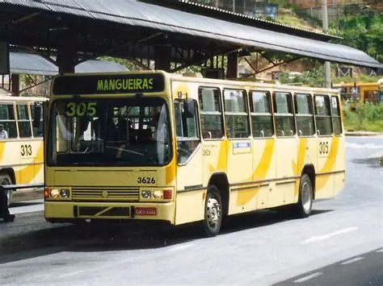
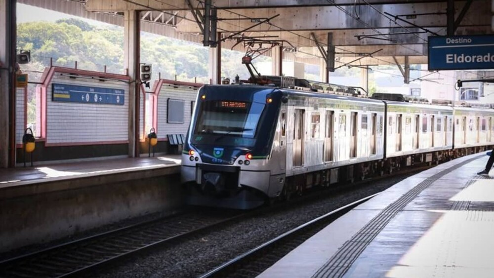
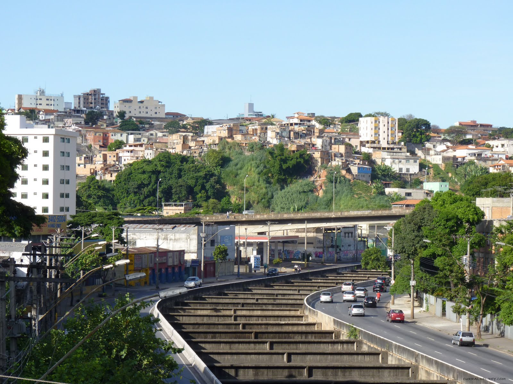

Mobilidade Urbana em BH
Transporte 05/03/2026
Prefeitura lança novos ônibus da linha 305
Ana Maria Pires

Bolsas de Estudo
Educação 20/03/2026
Puc Barreiro oferece bolsas integrais e parciais
João Martins da Silva

Metrô chega ao Barreiro
Transporte 01/02/2026
Depois de anos, finalmente o Barreiro terá seu metrô
Rosangela Andrade

Ampliamento de faixas
Transporte 26/01/2026
Avenida Tereza Cristina será alargada no Barreiro
Romario Neves